Monitoraggio temperatura
Il progetto ha come scopo quello di ottenere dati da un sensore di temperatura e di visualizzare quest’ultimi su tre display a 7 segmenti per fornire una temperatura da 0 a 100°C.
Soluzione tecnica
| R1 | R2 | R3 | R4 |
|---|---|---|---|
| L | L | H | H |
Tutto cambia invece quando R3-R4 vengono portati a +Vcc, in quanto il contatore entra in fase di RESET
| R1 | R2 | R3 | R4 |
|---|---|---|---|
| L | L | L | L |
L’ ultimo accorgimento da me preso è stato invece di usare i pin RB0 e RBI dei driver. Collegando l’ output del primo all’ input del secondo e così via ho potuto ottenere una visualizzazione più pulita, in quanto se il display deve mostrare solo una cifra, i due display dopo risulteranno spenti.
Schema a blocchi

Amplificazione
Per amplificare il segnale abbiamo utilizzato un’amplificatore in configurazione non invertente. Il sensore rilascia una tensione che varia da 0V a 1,5V, quindi abbiamo configurato le due resistenze per avere un’amplificazione totale pari a 3,2. In questo modo il segnale all’ADC varierà da 0V a 4,8V, assegnando alle due resistenze i valori 2,2kΩ e 1kΩ.
